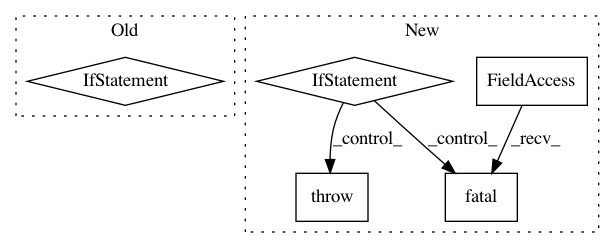

5a29571bdeb6deaffa8ed1e7b404566bc7b62505,niftynet/io/image_reader.py,ImageReader,initialise_reader,#ImageReader#Any#Any#,40
Before Change
app_type = task_param.name
if app_type == "net_segment.py":
from niftynet.application.segmentation_application \
import SUPPORTED_INPUT
// only choose output names that are supported by the application
// (SUPPORTED_INPUT) and have user parameter specification
elif app_type == "net_gan.py":
from niftynet.application.gan_application \
import SUPPORTED_INPUT
if not self.names:
// by default, reader tries to output all supported output names
self.names = SUPPORTED_INPUT
After Change
data_to_load = {}
for name in self._names:
for source in self._input_sources[name]:
if source not in data_param:
tf.logging.fatal(
"reader name [{}] requires [{}], however it is not "
"specified as a section in the config, "
"current input section names: {}".format(
name, source, list(data_param)))
raise ValueError
else:
data_to_load[source] = data_param[source]
self._file_list = ImageReader.load_and_merge_csv_files(data_to_load)
self.output_list = filename_to_image_list(self._file_list,
self._input_sources,
data_param)
In pattern: SUPERPATTERN
Frequency: 3
Non-data size: 5
Instances
Project Name: NifTK/NiftyNet
Commit Name: 5a29571bdeb6deaffa8ed1e7b404566bc7b62505
Time: 2017-08-19
Author: wenqi.li@ucl.ac.uk
File Name: niftynet/io/image_reader.py
Class Name: ImageReader
Method Name: initialise_reader
Project Name: NifTK/NiftyNet
Commit Name: 2345eb88f3264da85643a4d9d5adec3cf6f9b973
Time: 2017-11-14
Author: wenqi.li@ucl.ac.uk
File Name: niftynet/io/image_reader.py
Class Name:
Method Name: _filename_to_image_list
Project Name: NifTK/NiftyNet
Commit Name: 72e0907d7784f62157906818686da273ab6aa7ed
Time: 2018-09-11
Author: wenqi.li@ucl.ac.uk
File Name: niftynet/contrib/segmentation_bf_aug/segmentation_application_bfaug.py
Class Name: SegmentationApplicationBFAug
Method Name: initialise_dataset_loader